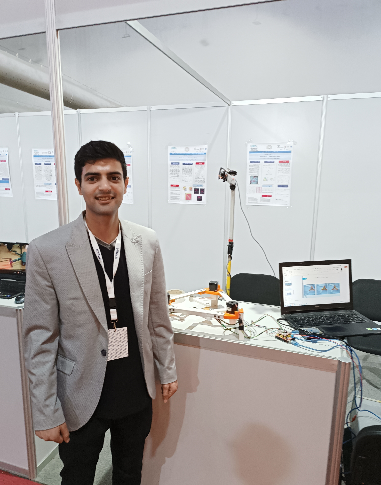

Kinan ALI
Eloctronic Systems Engineer

Graduated from the Higher Institute for Applied Sciences and Technology (HIAST). Currently working with medical equipment at KME. My projects and interests focus on Control Systems and Robotics.
Skills
Software
Python – Strong
C++ – Strong
MATLAB – Strong
OpenCV – Intermediate
TensorFlow – Familiar
Hardware
Arduino – Strong
STM32 – Intermediate
Motor Drivers – Strong
Sensors & Actuators – Strong